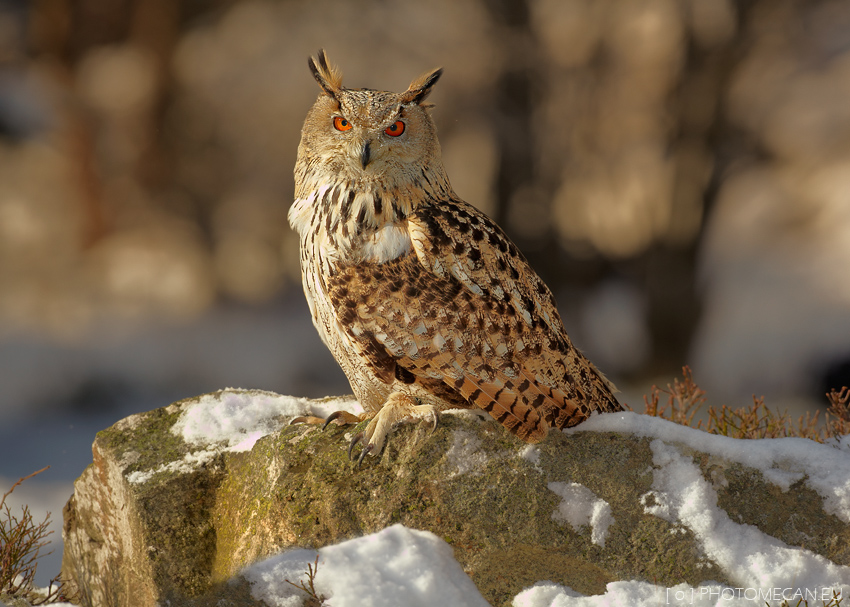

Bubo bubo
Eagle owls (or bubos) live throughout Europe and Asia. They have an extremely large wingspan, and they are well-known for bright orange eyes and tufts of feathers on their heads. They are birds of prey and while they can live in many different habitats, they often build nests in rocky areas.